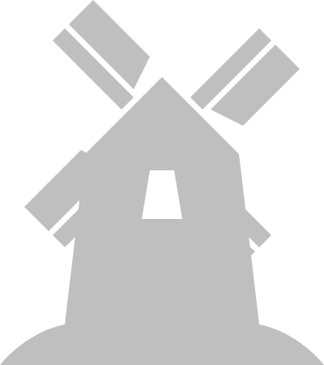

Reunión 4 Geoinquietos Sevilla
23/07/2013
TileMill
Diseña tus mapas
Me presento

- Juan Luis Rodríguez Ponce
- Desarrollador GIS
- Twitter: @juanluisrp
- Github: http://juanluisrp.github.io/tilemill-slides
¿De qué vamos a hablar?
- Qué es TileMill
- Instalación
- Entorno
- CartoCSS
- Ejemplos
TileMill
¿Qué es?
¿Qué es?
TileMill es una aplicación de escritorio para crear visualizaciones de datos geográficos.
Es multiplataforma
- Linux
- Mac
- y Windows
Aunque puede ser instalado en modo servidor, por ejemplo aquí:
¿Qué no es?
No permite realizar modificaciones en los datos.
No es un editor GIS.
Alternativas:
Qgis
gvSIG
ArcGIS
Instalación
- Acceder a http://www.mapbox.com/tilemill/
- Seleccionar el sistema operativo adecuado y descargar el instalador
- Ejecutar el instalador
user@machine:~$ tar xvzf install-tilemill.tar.gz user@machine:~$ sudo ./install-tilemill.sh
Entorno de trabajo
Proyectos
Manual
Plugins
Ajustes
Edición
Referencia de CartoCSS
Fuentes disponibles
Plantillas
Fuentes de datos (capas)
Capas
Formatos aceptados
- Shapefile
- KML
- GeoJSON
- GeoTIFF
- Base de datos SQLite
- Base de datos Postgis
Origen de los datos
- Locales
- Mapbox Library

Carto Style Sheet
Dando estilo a nuestros datos
Dando estilo a nuestros datos
“Pordríamos utilizar SLD, ¿no?”
SLD
Styled Layer Descriptor
- Es un estándar del OGC
- ¡Es XML!
- Pesado de escribir manualmente

- Hay que acordarse de cerrar etiquetas
- Documentos largos y complejos
- Dificilmente entendibles
- Pesado de escribir manualmente
Carto CSS
“Es un lenguaje de hojas de estilos para describir la presentación de datos geográficos”
#layer {
line-color: #C00;
line-width: 1;
}
#layer {
line-color: #0AF;
line-opacity: 0.5;
line-width: 2;
}
Carto CSS
- Inspirado en CSS
- No es un "estándar" pero es abierto. Diseñado pensando en Mapnik.
- Usado entre otros por
- TileMill
- Mapbox
- CartoDB
- ¡Geoserver!
- Usado entre otros por
Algunas diferencias con CSS
@variables: 'sí';.selectores { .anidados { }}// Comentarios de una líneallamadas-a-funciones(1, 3);
Selectores
#ID de capas
#layer {
line-width: 2;
}
#layer {
line-width: 2;
}
Selectores
.Clases
.mi-clase {
border-color: #3322ab;
}
.mi-clase {
border-color: #3322ab;
}
Filtros
Escala
#layer [zoom < 8] {
line-width: 2;
}
#layer [zoom > 8] {
line-width: 4;
}
#layer [zoom < 8] {
line-width: 2;
}
#layer [zoom > 8] {
line-width: 4;
}
Filtros
[Valores de los datos]
#layer [mi_columna >= 8][mi_columna < 12] {
line-width: 2;
}
#layer [mi_texto = 'un texto'] {
line-width: 4;
}
#layer [mi_columna >= 8][mi_columna < 12] {
line-width: 2;
}
#layer [mi_texto = 'un texto'] {
line-width: 4;
}
Los filtros puedes combinarse. En este ejemplo, deben cumplirse las dos condiciones.
Estilo líneas
- line-color
- line-width
- line-opacity
- line-join
- line-cap
- line-dasharray
- ...
Patrón líneas
Permite repetir una imagen a lo largo de una línea
- line-pattern-file
- ...
Estilo puntos
- point-file
- point-allow-overlap
- point-opacity
- point-placement
- ...
Estilo puntos (marcadores)
- marker-file
- marker-opacity
- marker-fill-opacitty
- marker-line-color
- marker-line-width
- marker-line-opacit
- marker-type
- marker-width
- marker-heigh
- ...
Estilo polígonos
- polygon-fill
- polygon-opacity
- point-opacity
- point-placement
- ...
Patrón para polígonos
Permite rellenar un polígono con una imagen patrón que se repite en toda la extensión del polígono
- polygon-pattern-file
- polygon-pattern-opacity
- ...
Placas
Se suelen poner a lo largo de las vías con su denominación
- shield-name
- shield-file
- shield-face-name
- shield-size
- shield-fill
- shield-avoid-edges
- shield-min-distance
- ...
Etiquetas
Son todos los textos que aparecen en el mapa. Se puede aplicar a cualquier tipo de capa (excepto ráster)
- text-name
- text-face-name
- text-size
- text-wrap-width
- text-fill
- text-opacity
- text-halo-fill
- text-avoid-edges
- text-orientatio
- ...
Raster
Se aplica a las capas de tipo GeoTiff
Edificios
Puede mostrar polígonos en falso 3D. Para esto necesita un campo altura
- building-fill
- building-fill-opacity
- building-height
¿Practicamos?

Este obra está bajo una Licencia Creative Commons Atribución-NoComercial 3.0 España